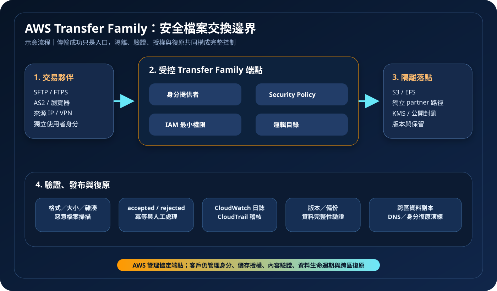

AWS Transfer Family：受管檔案傳輸與交換邊界
AWS Transfer Family 以受管端點承接 SFTP、FTPS、FTP、AS2 與瀏覽器式檔案交換，資料直接進出 Amazon S3 或 Amazon EFS。服務降低協定伺服器維運負擔，但不會自動完成身分驗證、目錄隔離、儲存授權、惡意檔案檢查、資料保留或跨區復原。
作者：Dr. William｜查閱與發布：2026-11-25
服務定位
AWS Transfer Family 是受管檔案傳輸服務，可讓既有 SFTP、FTPS、FTP、AS2 或瀏覽器使用者把檔案傳入或傳出 Amazon S3 與 Amazon EFS。AWS 管理協定端點及其底層服務容量，客戶管理使用者、身分來源、端點類型、網路可達性、儲存權限、檔案處理與資料生命週期。
服務適合保留合作夥伴或舊系統熟悉的檔案交換介面，同時把後端儲存移至 AWS。它不是通用檔案同步代理、資料庫複寫、即時串流、內容協作平台，也不會因採用 SFTP 就自動建立端到端資料治理。
FTP 不提供傳輸加密，正式環境通常應優先評估 SFTP、FTPS、AS2 或私有網路路徑。若業務必須使用 FTP，需以內部 VPC 端點、受控 VPN／Direct Connect、來源限制與補償控制降低明文傳輸風險。
核心概念
傳輸與端點
- SFTP：透過 SSH 傳輸，適合金鑰或密碼式既有整合。
- FTPS：透過 TLS 保護 FTP 工作流程，需管理憑證與用戶端相容性。
- FTP：未加密協定，只應在明確隔離及風險接受下使用。
- AS2：常見於企業對企業結構化資料交換，涉及交易夥伴、憑證、簽章與回條。
- 端點類型：公有、VPC 網際網路或 VPC 內部端點的協定支援、固定 IP 與可達性不同。
身分、授權與資料
- 身分提供者：可依協定使用服務代管使用者、AWS Directory Service、Lambda 或 API Gateway 自訂整合。
- 服務角色：Transfer Family 代表使用者存取 S3 或 EFS，IAM 權限必須限制到必要路徑與操作。
- 邏輯目錄：把實際 bucket、prefix 或檔案系統路徑映射成使用者可理解的虛擬目錄。
- 工作流程：可在上傳後執行複製、標記、解密或自訂處理，但仍需設計錯誤路徑與隔離區。
- 觀測：CloudWatch 記錄連線與傳輸事件，CloudTrail 記錄控制面；S3 物件操作需依需求啟用資料事件。
適合與不適合的使用情境
適合
- 合作夥伴只能使用 SFTP、FTPS、FTP 或 AS2，後端希望改用 S3 或 EFS。
- 既有批次交換介面需要維持主機名稱、目錄與認證模式，降低移轉衝擊。
- 需要受管端點、結構化日誌、傳輸指標與上傳後處理流程。
- 每個交易夥伴需要獨立目錄、IAM 角色、KMS 權限與資料保留政策。
- 內部使用者需要以瀏覽器介面存取受控 S3 檔案區，而非直接取得 AWS 管理權限。
不適合或不能單獨完成
- 應用需要毫秒級事件串流、訊息佇列或資料庫變更複寫；應比較 Kinesis、MSK、SQS、DMS 等服務。
- 需要雙向持續同步、衝突解決與端點代理；Transfer Family 不是完整檔案同步產品。
- 希望僅靠傳輸協定判斷檔案可信；仍需格式驗證、雜湊、惡意程式掃描與業務規則。
- 無法接受 S3 物件語意與傳統檔案系統行為差異，卻未做用戶端命令與部分上傳測試。
- 要求跨區自動接手，但沒有第二區域的 DNS、身分、端點、金鑰、資料副本與演練。
- 使用 FTP 對外公開，卻沒有正式風險接受、網路隔離及替代方案期限。
示意故事案例：供應商以 SFTP 交付每日訂單檔
以下為示意案例，不代表特定企業或正式部署。 一家零售企業每天接收多家供應商的訂單與庫存檔。供應商現有系統只能使用 SFTP，且每家公司必須只能看到自己的上傳區與處理結果。
團隊建立具多可用區網路配置的 VPC 網際網路端點，透過 DNS 提供固定業務名稱並限制核准來源。供應商以個別身分登入；每個身分映射到獨立 IAM 角色與 S3 prefix，邏輯目錄只呈現 inbound、accepted、rejected。S3 啟用 Block Public Access、KMS 加密、版本與生命週期政策，金鑰政策只允許核准角色使用。
檔案先落入隔離 prefix，事件觸發驗證與惡意檔案掃描。通過格式、大小、命名、雜湊與業務規則後才複製到 accepted；失敗檔案移至 rejected 並產生通知。CloudWatch 保存結構化傳輸日誌並告警登入失敗、傳輸錯誤與異常流量；CloudTrail 記錄端點、使用者、角色與金鑰變更，S3 資料事件依稽核需求記錄物件操作。關鍵交換檔另複寫到第二區域，團隊定期演練 DNS 切換、身分重建、金鑰授權與檔案重送。

建置與運作流程
- 盤點交易夥伴、使用者、來源網路、檔案類型、每日量、尖峰連線、單檔大小與傳輸時窗。
- 確認協定為 SFTP、FTPS、FTP、AS2 或瀏覽器傳輸，記錄舊用戶端與密碼套件相容需求。
- 分類資料敏感度、所有權、保留、落地區域、跨境、刪除、不可變與稽核要求。
- 選擇 S3 或 EFS，驗證用戶端命令、目錄、重新命名、部分上傳與檔案鎖定語意。
- 定義端點類型、公私網路、固定 IP、DNS、Security Group、NACL、VPN／Direct Connect 與來源限制。
- 正式環境避免使用未加密 FTP；必要使用時限制為私有路徑並建立退場期限。
- 選擇服務代管、Directory Service、Lambda 或 API Gateway 身分來源，設計停用、鎖定、輪替與復原。
- 管理人員使用聯合身分、MFA 與短期角色；分離端點、使用者、網路、金鑰與日誌管理權限。
- 為每類使用者建立最小權限服務角色及信任政策，只允許必要 bucket、prefix、EFS path 與動作。
- 以邏輯目錄或 home directory 隱藏實體儲存結構，並以 IAM session policy 或獨立角色做第二層限制。
- 選擇並明確指定符合相容性與法遵需求的 Transfer Family security policy，不依賴可能變動的預設值。
- 設定 S3 Block Public Access、bucket policy、Object Ownership、版本、生命週期與必要的 Object Lock。
- 使用 KMS 加密資料，限制 key policy 與 grant；身分整合或 PGP 私密材料集中於 Secrets Manager／Parameter Store。
- 建立 inbound 隔離區、檔案大小與類型限制、格式驗證、惡意程式掃描、雜湊與核准後移動流程。
- 對 managed workflow、自訂 Lambda 與失敗路徑設定冪等、重試、隔離、通知及人工處理程序。
- 啟用 CloudWatch 結構化日誌、傳輸指標與告警，設定保留、集中查詢及敏感資訊遮罩。
- 啟用組織層級 CloudTrail；需要物件級稽核時，對指定 S3 bucket 啟用適量資料事件。
- 測試有效與無效登入、越權路徑、來源限制、舊演算法、部分上傳、大檔、重試及同名檔案。
- 定義 RTO、RPO，建立 S3 跨區複寫或 EFS 備份／複寫、第二區域端點、身分、DNS 與金鑰方案。
- 在隔離環境演練第二區域重建、資料驗證、交易夥伴連線、重送與回切。
- 持續檢查未使用端點、閒置協定、異常傳輸量、日誌成本、工作流程失敗與過期使用者。
成本、可用性與維運考量
Transfer Family 費用依功能可能包含伺服器端點啟用時間、SFTP／FTPS／FTP 傳輸資料量、AS2 訊息、managed workflow 處理量、SFTP connector 呼叫與資料量，以及 web app units。另需計入 S3／EFS、資料傳輸、Route 53、Elastic IP、Lambda、API Gateway、Directory Service、Secrets Manager、KMS、CloudWatch 與 CloudTrail 費用。
端點即使沒有傳輸，也可能持續產生啟用費用。估算時需分開計算端點數、啟用協定、區域、每月傳入與傳出 GB、檔案數、AS2 訊息數、工作流程處理量、日誌量與跨區複寫。小量低頻交換不一定比現有共享平台便宜，高量傳輸則應特別檢查資料傳出與日誌資料事件成本。
AWS 文件說明 Transfer Family server 可跨最多三個可用區配置，底層連線與傳輸由冗餘自動擴展服務處理；這不等於交易夥伴、DNS、身分提供者、S3／EFS、KMS、工作流程與第二區域均具備相同可用性。端點多 AZ 不能取代跨區資料副本與復原演練。
AWS Transfer Family 特有資安風險與控制
- FTP 明文傳輸：優先改用 SFTP、FTPS 或 AS2；必要使用時僅允許 VPC 內部端點與受控私有連線。
- 端點暴露過廣：依需求選擇 VPC 內部或網際網路端點，以 Security Group、NACL、來源 IP、VPN 與 Direct Connect 限制可達面。
- 舊密碼套件長期保留：明確選定 security policy，盤點舊用戶端並訂定淘汰時間；CloudFormation 不應無意接受較舊預設。
- 身分提供者回傳過度權限：驗證 Lambda／API Gateway 輸出的角色、目錄與政策，拒絕空值、錯誤來源或未核准協定。
- 自訂認證可被濫用：限制 Transfer Family 對 Lambda／API Gateway 的呼叫權限，停用認證快取，對失敗與來源異常告警。
- 目錄看似隔離但儲存仍可越權：邏輯目錄搭配獨立角色或 S3 session policy；EFS 另以 POSIX 權限與 access point 控制。
- S3 prefix 權限過寬：限制 ListBucket 條件、物件 ARN、刪除、覆寫、讀取與跨 partner 路徑，不共用全 bucket 管理角色。
- KMS 權限造成跨租戶解密：限制 key policy、grant 與 encryption context，分離資料管理者與金鑰管理者。
- 秘密或 PGP 私密材料散落：集中於 Secrets Manager／Parameter Store，設定輪替、存取稽核與禁止日誌輸出。
- 部分上傳被誤當完整檔案：以暫存命名、完成標記、大小／雜湊驗證與冪等處理避免下游提前讀取。
- 惡意或錯誤檔案直接進核心系統：先寫隔離區，執行類型、格式、惡意程式、內容與業務規則檢查後再發布。
- 同名檔案覆寫證據：啟用版本、唯一物件鍵、不可變保留或寫入政策，記錄原始名稱與處理結果。
- 只記錄控制面：CloudTrail 管理事件不足以涵蓋所有檔案操作；結合 CloudWatch 傳輸日誌與必要的 S3 資料事件。
- 日誌洩漏檔名或業務資料：控制日誌欄位、保留、查詢權限與匯出位置，避免把敏感內容寫入錯誤訊息。
- 交易夥伴離場未撤權：建立到期日、停用程序、金鑰撤銷、目錄移除、來源 IP 清理與資料保留確認。
- 備份只涵蓋資料：同步保存 IaC、端點參數、security policy、身分映射、DNS、憑證與工作流程設定。
- 跨區復原無法登入：預先驗證第二區域身分提供者、KMS、DNS、憑證、端點與 partner allowlist。
共同責任邊界
AWS 負責 Transfer Family 受管服務與底層雲端基礎設施，包括協定端點服務、硬體與服務容量管理、故障處理，以及與 S3、EFS、IAM、KMS、CloudWatch、CloudTrail、Lambda、API Gateway 等服務的整合能力。
客戶負責協定與端點選型、交易夥伴身分、IAM 最小權限、MFA／短期管理憑證、網路隔離、公開存取、security policy、S3／EFS 權限、KMS 政策、Secrets Manager／Parameter Store、CloudTrail／CloudWatch、檔案驗證、惡意程式掃描、資料保留、備份、第二區域重建與復原驗收。AWS 管理端點可用性，不代表客戶資料交換流程與下游處理已具備韌性。
上線與維運可執行檢查清單
- □ 交易夥伴、使用者、來源、協定、檔案類型、大小、頻率與時窗清冊完整。
- □ 已比較 SFTP、FTPS、FTP、AS2、瀏覽器傳輸與替代整合方式。
- □ FTP 若仍存在，已限制於私有路徑並有正式風險接受與退場日期。
- □ S3／EFS 的命令、目錄、部分上傳、重新命名、覆寫與鎖定語意已測試。
- □ 端點類型、AZ、DNS、固定 IP、Security Group、NACL 與來源限制已核准。
- □ 管理人員使用聯合身分、MFA 與短期角色，權限已分離。
- □ 身分提供者具停用、鎖定、輪替、來源驗證與故障處理程序。
- □ 每個使用者或群組的服務角色只允許必要 bucket、prefix、EFS path 與動作。
- □ 邏輯目錄另有 IAM session policy、獨立角色或 POSIX 權限作為儲存層限制。
- □ 已明確指定並測試 security policy，未無意保留過時演算法。
- □ S3 Block Public Access、bucket policy、版本、生命週期與 Object Ownership 已設定。
- □ KMS key policy、grant、停用、刪除與第二區域復原權限已測試。
- □ 整合秘密與 PGP 私密材料集中管理，頁面、範本與日誌無明文機密值。
- □ inbound 隔離、格式、大小、命名、雜湊、惡意程式與業務規則檢查已落地。
- □ workflow 具冪等、重試、失敗隔離、通知與人工處理程序。
- □ CloudWatch 結構化日誌、指標、保留、查詢與異常告警已設定。
- □ CloudTrail 管理事件已集中保存；必要 S3 資料事件範圍與成本已核准。
- □ 無效登入、越權、來源限制、大檔、部分上傳、同名檔與中斷恢復均已測試。
- □ RTO、RPO、資料副本、第二區域端點、DNS、身分、憑證與 KMS 方案已定義。
- □ 已完成第二區域登入、傳輸、驗證、重送、回切及資料完整性演練。
- □ 閒置端點、過期使用者、異常傳輸量、工作流程失敗與費用告警定期檢查。
AWS 官方一手來源
- AWS Transfer Family 產品頁（查閱：2026-11-25）
- What is AWS Transfer Family?（查閱：2026-11-25）
- Configuring an SFTP, FTPS, or FTP server endpoint（查閱：2026-11-25）
- Identity provider options and endpoint types（查閱：2026-11-25）
- Security in AWS Transfer Family（查閱：2026-11-25）
- Security policies for Transfer Family servers（查閱：2026-11-25）
- Managing access controls（查閱：2026-11-25）
- Creating a session policy for an S3 bucket（查閱：2026-11-25）
- Using logical directories（查閱：2026-11-25）
- AWS Transfer Family managed workflows（查閱：2026-11-25）
- CloudWatch logging for Transfer Family servers（查閱：2026-11-25）
- CloudTrail logging for AWS Transfer Family（查閱：2026-11-25）
- Transferring files using a client（查閱：2026-11-25）
- AWS Transfer Family Pricing（查閱：2026-11-25）
- AWS Shared Responsibility Model（查閱：2026-11-25）
內容說明
本文依 2026-11-25 可查閱的 AWS 官方文件整理。Transfer Family 的協定、端點類型、身分提供者、security policy、區域、配額、managed workflow、web app、日誌與價格可能更新；正式導入前應依目標區域最新文件、相容性測試、資安審查、費用估算與跨區復原演練為準。